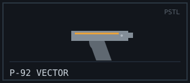
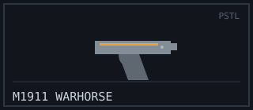
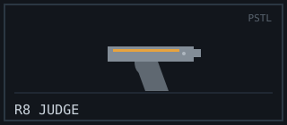
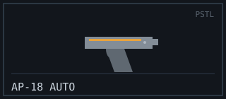

PISTOL
Role: Reliable Sidearm & Economy Backup
Pistols are the great equalizer. They cost almost nothing, they are always in your holster, and on an eco round a well-aimed sidearm can steal a fight your team had no business winning. Low damage and small magazines keep them honest — but land your shots and any pistol on this rack will do the job.
Arsenal Comparison
| Weapon | Damage | Fire Rate (RPM) | Magazine | Reload (s) | Range (m) | Recoil (1–10) | Price ($) |
|---|---|---|---|---|---|---|---|
| P-92 Vector | 26 | 450 | 15 | 1.6 | 30 | 3 | 500 |
| M1911 Warhorse | 38 | 320 | 8 | 2.1 | 35 | 5 | 650 |
| R8 “Judge” | 72 | 90 | 8 | 2.8 | 45 | 7 | 850 |
| AP-18 Auto | 20 | 900 | 26 | 1.8 | 22 | 6 | 700 |
Weapon Files
P-92 Vector

Combat Stats
- Fire Mode: Semi-automatic
- Ammo Type: 9mm
- Wall Penetration: Low
- Mobility: 100%
Description / Lore
Standard-issue 9mm handed to every recruit on day one. Flat recoil, a generous 15-round magazine, and a trigger that never argues. It will never win a beauty contest, but it has never let a careful operator down.
Unlock Requirement
Available by default — Variant “Graphite” unlocks at 500 eliminations.
M1911 Warhorse

Combat Stats
- Fire Mode: Semi-automatic
- Ammo Type: .45 ACP
- Wall Penetration: Medium
- Mobility: 99%
Description / Lore
A century-old design that refuses to retire. Two taps put almost anyone down, but the eight-round magazine punishes greedy fingers. This is the sidearm veterans reach for when they want a fight settled in fewer, heavier hits.
Unlock Requirement
Reach Account Level 5 — Variant “Ivory Grip” is a rank-25 reward.
R8 “Judge”

Combat Stats
- Fire Mode: Single-action revolver
- Ammo Type: .357 Magnum
- Wall Penetration: High
- Mobility: 96%
Description / Lore
Hand-cannon justice. A single well-placed round is a death sentence, but the slow hammer swing and heavy kick mean you had better be sure. Miss, and the Judge leaves you exposed with a long, lonely reload.
Unlock Requirement
Land 25 pistol headshots — Variant “Blued Steel” at 100 headshots.
AP-18 Auto

Combat Stats
- Fire Mode: Full-automatic
- Ammo Type: 9mm
- Wall Penetration: Low
- Mobility: 100%
Description / Lore
A machine pistol that empties its 26-round magazine in a heartbeat. Spray-and-pray incarnate — wildly effective inside five metres, near useless past twenty. Tame it with short bursts and it becomes a genuine primary-killer on eco rounds.
Unlock Requirement
Purchase from the buy station — “Full-Auto Kit” skin at Level 12.
Signature Showcase — M1911 Warhorse
Field footage: how the Warhorse's short-recoil action cycles, frame by frame.
External Intel
- Reference: Pistol (Wikipedia)
- Showcase video: How a Colt M1911 works (YouTube)